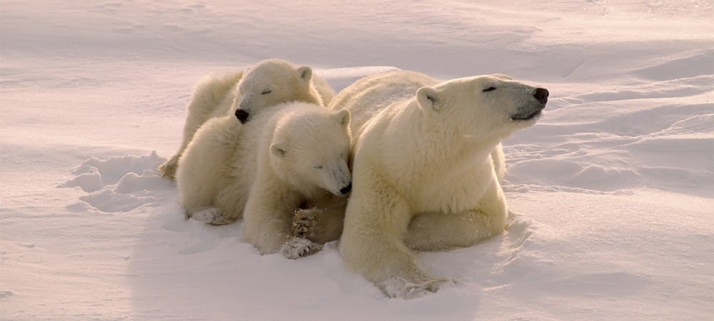
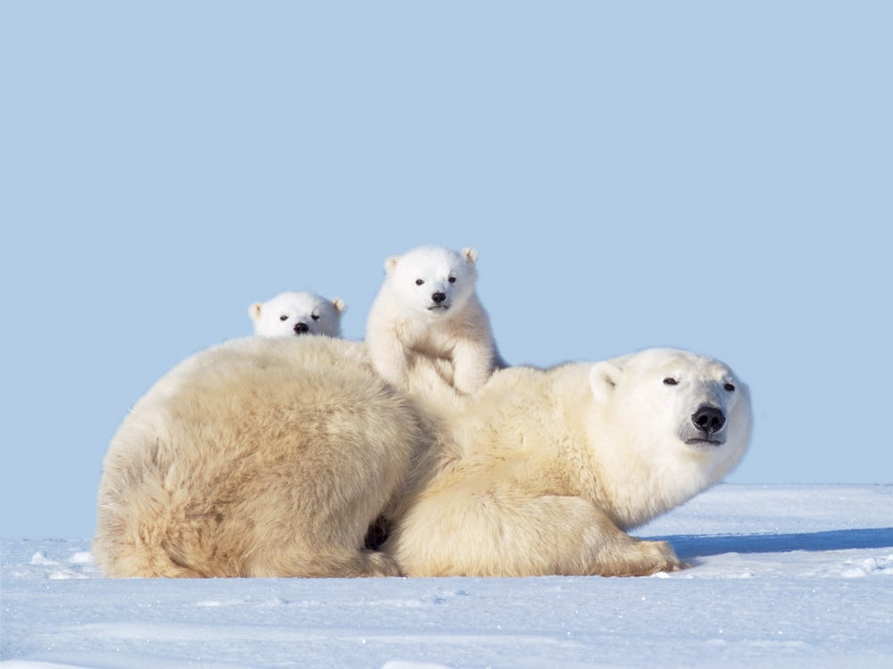
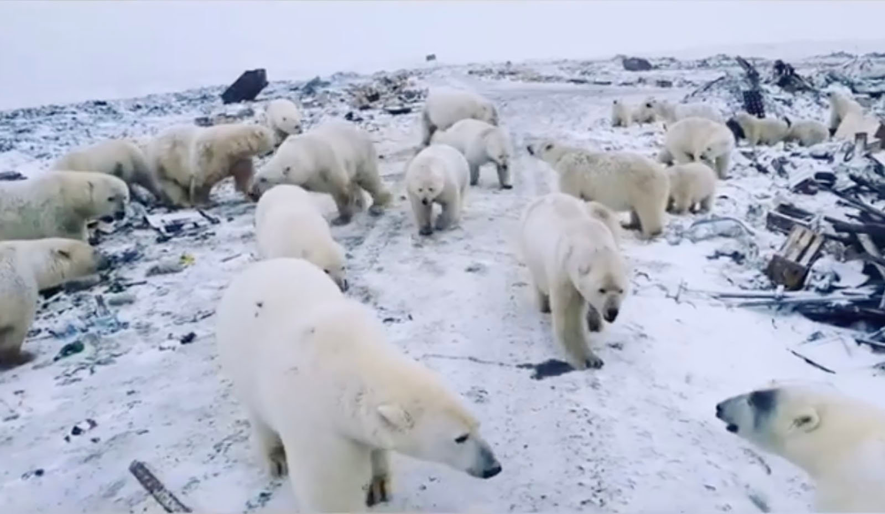
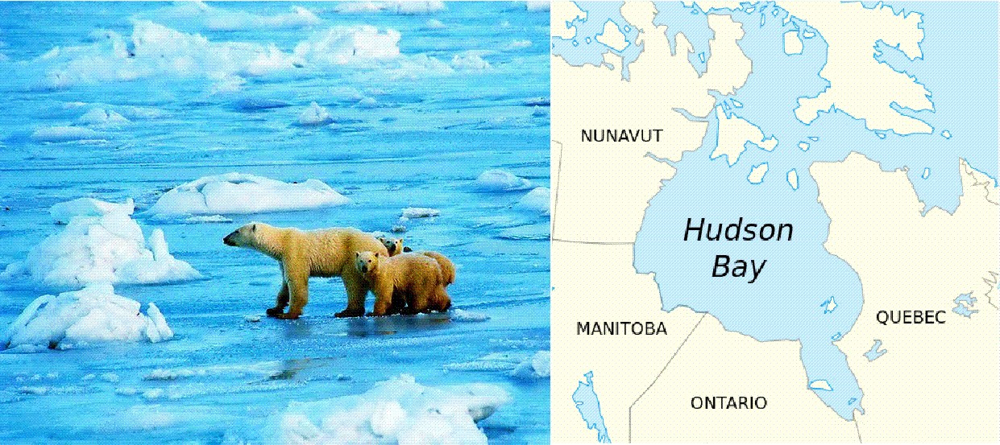

Polar Bear
Polar bears live on sea ice in the icy cold places.The polar bear is a hypercarnivorous bear whose native range lies largely within the Arctic Circle, encompassing the Arctic Ocean, its surrounding seas and surrounding land masses. It is the largest extant bear species, as well as the largest extant land carnivore. Polar bears primarily eat seals. Polar bears often rest silently at a seal's breathing hole in the ice, waiting for a seal in the water to surface. A polar bear may also hunt by swimming beneath the ice. But climate change is making it harder for polar bears to hunt.
Polar Bear
Polar bears roam the Arctic ice sheets and swim in that region's coastal waters. They are very strong swimmers, and their large front paws, which they use to paddle, are slightly webbed. Some polar bears have been seen swimming hundreds of miles from land—though they probably cover most of that distance by floating on sheets of ice.
|

Polar Bear moms give birth to one to three cubs. |

Polar Bear moms teach their newborn cubs how to hunt. |
|

Polar Bears have fur and skin. |

Polar Bear in Hudson Bay in North America. |
Polar bears are the largest carnivorous land mammals on Earth. They are about seven to eight feet long, measured from the nose to the tip of their very short tail. Male polar bears are much larger than the females. A large male can weigh more than 1,700 pounds, while a large female is about half that size (up to 1,000 pounds). Bears can weigh about 50 percent more after a successful hunting season than they do at the start of the next; most of this additional weight is accumulated fat. A newborn polar bear weighs only about 1.5 pounds.
A hungry and exhausted young polar bear was spotted wandering in the suburbs of the Siberian industrial city of Norilsk this week, hundreds of miles from its usual habitat. As climate change melts sea ice earlier in the year, polar bears have begun to hunt for meals on land, like bird eggs. They're not very good at it, a new drone-based study reveals. That could be another bad omen for the bears' ability to survive a changing world, scientists say.

Many of the polar bear's physical adaptations help it maintain body heat and deal with its icy habitat. The bear's outer layer of fur is hollow and reflects light, giving the fur a white color that helps the bear remain camouflaged. The skin under the polar bear's fur is actually black; this black is evident only on the nose. Polar bears also have a thick layer of fat below the surface of the skin, which acts as insulation on the body to trap heat. This is especially important while swimming and during the frigid Arctic winter. The bear's large size reduces the amount of surface area that's exposed to the cold per unit of body mass (pounds of flesh), which generates heat.
Most polar bears occur north of the Arctic Circle to the North Pole. There are some populations south of the Arctic Circle in the Hudson Bay of Manitoba, Canada. Polar bears live in Alaska, Canada, Russia, Greenland, and some northern islands owned by Norway, such as Svalbard.
Polar bears depend on the sea ice, which forms above the open waters where their seal prey lives. They will spend time on land when sea ice is not available (and most pregnant polar bear females make their dens on shore near the coast). Polar bears are excellent swimmers, and they travel long distances between shore and the sea ice if necessary. However, if a storm kicks up during these increasingly long swims (caused by the warming ocean), they can drown. These long swims and storms are also often difficult for cubs. During periods of ice breakup, polar bears frequently swim between floating ice islands.
Unlike other bear species, polar bears are almost exclusively meat eaters (carnivorous). They mainly eat ringed seals, but may also eat bearded seals. Polar bears hunt seals by waiting for them to come to the surface of sea ice to breathe. When the seal nears the surface, the polar bear will bite or grab the seal and pull it onto land to feed.
Polar bears tend to live solitary lives except when mating, when a female raising her cubs forms a family group, or when many bears are attracted to a food source like a beached whale. Young polar bears spending the summer ashore on the Hudson Bay coast will frequently play with each other, most commonly with their siblings.
1. Because they spend so much time in the ocean, polar bears are classified as marine mammals. The polar bear’s scientific name, Ursus maritimus, means “sea bear.”
2. Polar bears evolved from brown bears to survive in extreme northern environments.
3. Polar bears are the largest terrestrial predator on the planet, with large males standing more than 11 feet (3.3 meters) tall on their hind legs and reaching weights over 1,700 pounds (770 kilograms).
4. Unlike black bears and brown bears, polar bears do not hibernate during the winter months because that’s when sea ice forms, which the polar bears need to hunt seals.
5. When necessary or playing, polar bears communicate with each other with grunts, growls, roars, or squeals.
(1) 40kph:- The polar bear's top speed.
(2) 42 razor sharp teeth:- With jagged back teeth and canines larger than grizzly teeth, they pack quite the bite.
(3) 30 cm wide paws:- The size of a dinner plate! A natural snowshoe that helps the bear trek across treacherous ice and deep snow.
(4) 3 eyelids:- The third helps protect the bear's eyes from the elements.
(5) 4 inches of fat:- Under the bear's skin to keep it warm-
Black skin,
Transparent fur,
Blue tongue.